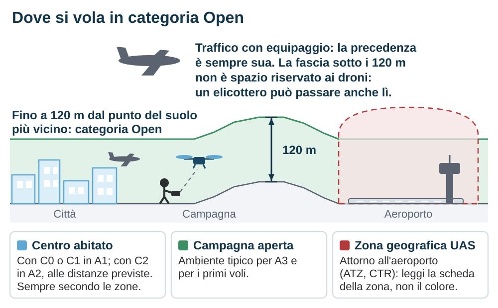
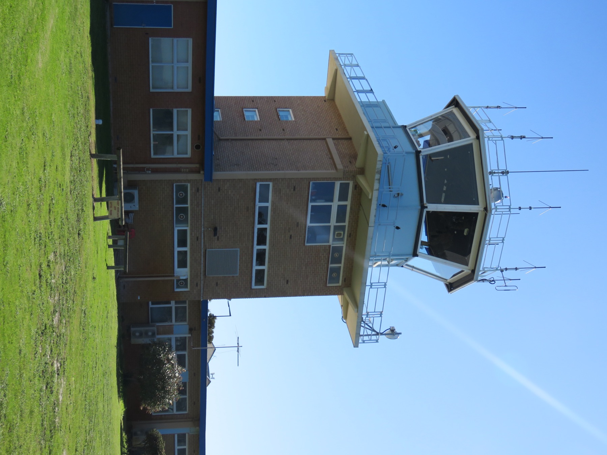

Volare in Italia
Il regolamento europeo dice cosa puoi fare; l'Italia decide come: dove ti registri, dove sostieni l'esame, quali zone sono soggette a restrizione, quanto costa, cosa succede se sbagli. Questo capitolo è la guida operativa per il pilota che vive in Italia, dal primo accesso a d-flight alla lettura della mappa delle zone geografiche. Importi e procedure sono quelli in vigore al 20 settembre 2026.
- Chi fa cosa in Italia
- Registrarsi su d-flight
- Attestato A1/A3 e certificato A2
- Le zone geografiche italiane
- Autorizzazioni e coordinamenti
- L'assicurazione
- Privacy e riprese
- Volare al chiuso
- Le sanzioni
- Segnalare un evento
- Le fonti aeronautiche
- U-space in Italia
Pagine ENAC, ANSV e d-flight consultate il 20 settembre 2026; importi e procedure sono quelli letti in quella data. Il Regolamento UAS-IT citato è l'Edizione 1 del 4 gennaio 2021. Tariffe, edizioni e procedure cambiano: verificale alla fonte prima di applicarle.
5.1 Chi fa cosa in Italia
L'autorità dell'aviazione civile è l'ENAC. È l'ENAC che esercita le competenze lasciate agli Stati dal regolamento europeo: tiene il registro degli operatori, organizza gli esami, definisce le zone geografiche, rilascia le autorizzazioni della categoria Specific, applica le sanzioni. Lo strumento principale è il Regolamento UAS-IT, il cui testo in vigore è l'Edizione 1 del 4 gennaio 2021: non sostituisce il regolamento europeo, lo integra con le disposizioni nazionali, dalla registrazione al QR code all'assicurazione. Dal dicembre 2024 l'ENAC ha messo in consultazione una nuova edizione, più ampia, che assorbe nel regolamento materie finora affidate alle circolari; al 20 settembre 2026 non è ancora stata pubblicata in via definitiva. Controlla sulla pagina ENAC quale edizione è in vigore quando leggi.
Accanto all'ENAC lavorano altri soggetti che incontrerai spesso:
- ENAV, l'ente per l'assistenza al volo, gestisce lo spazio aereo controllato e pubblica le informazioni aeronautiche ufficiali: l'AIP Italia e i NOTAM.
- d-flight è la società del gruppo ENAV, partecipata anche da Leonardo, che gestisce per conto dell'ENAC il portale nazionale dei droni: registrazione degli operatori, QR code, mappa delle zone geografiche, servizi di geo-consapevolezza e, dal 2026, i primi servizi U-space.
- ANSV, l'Agenzia nazionale per la sicurezza del volo, indaga sugli incidenti aerei, droni compresi.
- Il Garante per la protezione dei dati personali vigila sulle riprese che coinvolgono persone.
- Comuni e Questure intervengono con ordinanze locali e per i profili di pubblica sicurezza, ad esempio su eventi e luoghi sensibili.
5.2 Registrarsi su d-flight
La registrazione come operatore UAS, obbligatoria nei casi visti nel capitolo 4, sezione 4.3 (MTOM di 250 g o più, energia d'impatto oltre gli 80 J, oppure sensore di dati personali su un UAS non conforme alla direttiva giocattoli), si fa sul portale d-flight. Il percorso è questo.
- Crea l'account. Sul portale d-flight, con indirizzo e-mail e verifica dell'identità. Se sei una persona fisica ti registri a tuo nome; se operi per un'azienda o un ente, la registrazione è dell'organizzazione.
- Attiva l'abbonamento. La registrazione ha un canone annuale. Il profilo Base è pensato per l'uso ricreativo e per la categoria Open; il profilo PRO per chi opera in categoria Specific o ha bisogno dei servizi avanzati.
- Ottieni il numero di operatore e il suo QR code. D-flight ti assegna il numero di registrazione nel formato europeo, che inizia con «ITA». Il numero è uno solo e vale per tutti i tuoi droni, e così il QR code dell'operatore che lo rappresenta.
- Applica l'identificativo sul drone. Il numero di operatore va apposto in modo visibile e leggibile su ogni UAS con cui operi, con un'etichetta o un'incisione. Conservarlo solo sul telefono non basta.
- Carica il numero nel Remote ID. Se il drone ha la marcatura C1, C2 o C3, il numero di operatore va inserito nell'app o nel sistema del drone, così che venga trasmesso in volo.
- Tieni attivo il servizio. L'abbonamento d-flight ha durata annuale. Rinnovarlo è quello che ti tiene l'accesso ai servizi del portale; la posizione nel registro degli operatori e i suoi effetti giuridici sono cosa distinta dalla scadenza di un servizio commerciale, quindi verifica sulla tua area personale quale stato risulta.
| Voce | Importo | Note |
|---|---|---|
| Abbonamento Base | 7 € all'anno | Uso ricreativo e categoria Open. Comprende la registrazione come operatore e il QR code dell'operatore |
| Abbonamento PRO | 28 € all'anno | Categoria Specific e servizi avanzati |
| QR code UAS, profilo Base | 7 € per drone | Facoltativo. Etichetta aggiuntiva riferita al singolo aeromobile, non richiesta per adempiere all'obbligo di identificazione |
| QR code UAS, profilo PRO | 112 € per drone | Facoltativo. Versione per operatori PRO |
| Mappa e geo-consapevolezza | gratis | Per tutti gli utenti registrati |
La registrazione italiana vale in tutta l'Unione europea: con il tuo numero ITA puoi volare in Francia o in Grecia senza registrarti di nuovo, rispettando le zone geografiche locali. Se invece ti trasferisci stabilmente in un altro Stato membro, la registrazione va spostata lì.
5.3 Attestato A1/A3 e certificato A2
L'attestato A1/A3
La formazione per la categoria Open è gestita direttamente dall'ENAC. Il materiale del corso, un programma con le nove materie previste dal regolamento europeo, è pubblicato gratuitamente sul sito dell'ENAC e si studia da soli. L'esame si sostiene online sulla piattaforma dei servizi web dell'ENAC, con autenticazione tramite SPID per i maggiorenni e con i documenti del minore e del genitore per i minorenni. Prima di avviare la sessione si paga un diritto fisso di 31 €.
L'esame è di 40 domande a risposta multipla in 60 minuti, ma il punteggio non è il semplice conteggio delle risposte giuste. Al 20 settembre 2026 la procedura ENAC assegna +2 punti a ogni risposta corretta, 0 a una domanda lasciata in bianco e −1 a una risposta sbagliata, e chiede 60 punti su 80 per superare la prova. La differenza è concreta: trenta risposte giuste e dieci sbagliate valgono 50 punti e non bastano, mentre lo stesso 75% di risposte corrette con dieci domande lasciate in bianco ne varrebbe 60. Il diritto fisso copre più tentativi: verifica quanti sulla pagina ENAC prima di prenotare. Il documento che ottieni si chiama formalmente «prova di completamento della formazione online», ma tutti lo chiamano attestato A1/A3. Vale cinque anni e in tutta l'Unione; alla scadenza si ripete corso ed esame.
Il certificato A2
Per volare in A2 con un drone di classe C2 servono tre cose. La prima è l'attestato A1/A3. La seconda è un'autoformazione pratica, svolta da soli in condizioni A3, cioè lontano da tutto, e dichiarata dal candidato: non c'è un esame pratico con istruttore. La terza è un esame teorico aggiuntivo. Il regolamento europeo chiede solo che sia sorvegliato, ma l'Italia ha scelto la prova in presenza: si sostiene presso una Entità Riconosciuta dall'ENAC, e va sostenuto entro quindici giorni dal conseguimento dell'attestato A1/A3. Sono 30 domande in 60 minuti su meteorologia, prestazioni di volo e misure per ridurre il rischio a terra. All'ENAC si paga un diritto fisso di 31 €; l'ente riconosciuto aggiunge la propria tariffa, libera e variabile. Anche il certificato A2 vale cinque anni.
5.4 Le zone geografiche italiane
Le zone geografiche UAS previste dall'articolo 15 del regolamento europeo sono definite in Italia dall'ENAC con la circolare ATM-09A del marzo 2021 e pubblicate sulla mappa del portale d-flight, che dal 1º gennaio 2022 è il canale ufficiale. La mappa è consultabile gratuitamente da chiunque abbia un account e mostra, per ogni punto del territorio, se il volo in categoria Open è libero, limitato o vietato. Consultarla è il primo gesto di ogni volo.

Come leggere la mappa
Le zone sono rappresentate con un codice colore, ma il colore è solo un indice: la regola è nella scheda. Aprila sempre e leggi motivo della zona, condizioni, quota massima, periodo di validità e autorità competente. Zone dello stesso colore possono comportare adempimenti molto diversi.
- Nessuna zona: spazio aereo non controllato sotto i 120 m, il terreno di gioco naturale della categoria Open. Valgono le regole del capitolo 4 e, come vedrai più avanti, restano possibili vincoli che non sono zone UAS.
- Zone con limitazioni (in giallo o arancione): il volo è possibile rispettando le condizioni indicate nella scheda, tipicamente una quota massima ridotta, ad esempio 25 o 60 m, oppure un coordinamento preventivo con l'ente indicato.
- Zone con restrizione piena (in rosso): qui la scheda va letta con attenzione particolare. Alcune zone escludono del tutto la categoria Open, e per operarvi serve la categoria Specific con autorizzazione dell'ENAC o, per i siti militari, dell'Aeronautica Militare. Altre, istituite per ragioni diverse dalla sicurezza del volo, ammettono anche la Open a condizione di ottenere il nulla osta dell'ente che ha chiesto la restrizione. Non dedurre la categoria operativa dal colore.
Da dove vengono le zone
Le zone nascono da esigenze diverse. Le più estese sono quelle di sicurezza del volo attorno ad aeroporti, eliporti e aviosuperfici: nel linguaggio aeronautico si chiamano ATZ e CTR, e sono gli spazi in cui gli aerei decollano, atterrano e vengono guidati dai controllori. Ci sono poi le aree dell'AIP Italia classificate come proibite, regolamentate o pericolose (aree P, R e D: poligoni militari, impianti sensibili, zone di addestramento), le zone di sicurezza pubblica su città e siti sensibili, e le zone ambientali su parchi e aree protette. Per queste ultime vale una regola importante: un divieto dell'ente parco è efficace solo se approvato dall'ENAC e pubblicato su d-flight; in molte aree protette il volo richiede comunque il nulla osta dell'ente gestore, e la scheda della zona lo dice.
Vicino agli aeroporti
Attorno a ogni aeroporto la mappa mostra una zona con restrizione, di norma estesa per alcuni chilometri e con forma che segue le traiettorie di avvicinamento. Dove la scheda esclude la categoria Open, l'unica strada è la Specific, con nulla osta dell'ENAC o dell'Aeronautica Militare per gli aeroporti militari, e il coordinamento con l'ENAV o con la direzione dell'aeroporto.
In questo contesto si incontra spesso il riferimento a un'operazione condotta entro 10 m in orizzontale e 3 m sopra un ostacolo artificiale, a più di 500 m dal sedime aeroportuale. Sono condizioni che l'ENAC tratta nell'ambito delle operazioni in categoria Specific e dell'esenzione dalla riserva di spazio aereo, non un permesso di volare in Open vicino a un aeroporto. Tenere separati i quattro piani evita l'errore.
5.5 Autorizzazioni e coordinamenti
In categoria Open, fuori dalle zone geografiche, non devi chiedere il permesso a nessuno. Quando la mappa mostra una zona con condizioni, la scheda indica cosa fare: rispettare una quota, avvisare un ente, chiedere un nulla osta. L'ente cambia a seconda della zona: l'ENAV o la direzione aeroportuale per gli spazi vicini agli aeroporti, l'Aeronautica Militare per le aree militari, l'ente gestore per i parchi, la Prefettura o la Questura per le zone di sicurezza pubblica. I tempi non sono immediati: per i coordinamenti con gli aeroporti le circolari ENAC prevedono preavvisi di settimane.
Quando la scheda della zona esclude la Open, o quando l'operazione esce dai limiti della Open, la strada è la categoria Specific: autorizzazione operativa dell'ENAC, oppure dichiarazione per uno scenario standard, come descritto nel capitolo 6. È il caso delle riprese in un centro storico affollato e degli eventi. Attenzione però a non ricavare la categoria dal solo peso del drone: un C2 può operare in A2 anche in ambito urbano, se rispetta le distanze, la modalità a bassa velocità attiva e tutte le altre condizioni. Il sorvolo di un assembramento, si tratti di una piazza piena, di un concerto o di una manifestazione sportiva, è vietato in Open senza eccezioni.
Vincoli che non sono zone aeronautiche
La mappa d-flight risponde a una domanda sola: che cosa dice l'autorità aeronautica sullo spazio aereo di quel punto. Attorno restano altri vincoli, che nascono da autorità e discipline diverse e vanno verificati separatamente.
- Accesso e decollo. Il permesso del proprietario di un terreno riguarda l'accesso e il decollo, non autorizza lo spazio aereo sopra. E l'assenza di una zona UAS non risolve la questione di poter stare lì con l'attrezzatura.
- Tutela ambientale e della fauna. In un'area protetta un divieto di sorvolo dell'ente parco produce effetti aeronautici quando è approvato dall'ENAC e pubblicato su d-flight; restano però i regolamenti dell'ente sull'accesso e sul disturbo alla fauna, che valgono per altra via.
- Pubblica sicurezza. I Comuni possono emanare ordinanze su porzioni del territorio, e le Questure intervengono su eventi e luoghi sensibili. Sono atti che non compaiono sulla mappa.
- Privacy. Vale sempre e indipendentemente dal colore della zona: la sezione 5.7 la tratta a parte.
Prima di volare in un luogo pubblico frequentato conviene quindi verificare anche il fronte non aeronautico. Una telefonata al Comune orienta, ma non sostituisce la verifica dell'atto: chiedi gli estremi dell'ordinanza e quale ufficio l'ha emanata.

5.6 L'assicurazione
In Italia l'assicurazione di responsabilità civile verso terzi è obbligatoria per tutte le operazioni con droni, qualunque sia il peso: anche per il drone da 249 g. È una scelta nazionale che va oltre la soglia europea dei 20 kg vista nel capitolo 4, sezione 4.10. L'articolo 27 del Regolamento UAS-IT parla di operazioni con un UAS e non prevede un'esenzione per i giocattoli: la sola esclusione documentata è quella delle operazioni svolte interamente in spazi chiusi, di cui parla la sezione 5.8. Se qualcuno ti dice che un drone giocattolo è esente dall'obbligo assicurativo, chiedigli l'articolo su cui si fonda. La polizza deve coprire i danni a persone e cose, con massimali non inferiori a quelli minimi del Regolamento (CE) 785/2004, che per gli aeromobili sotto i 500 kg valgono 750.000 diritti speciali di prelievo, poco meno di un milione di euro. Le polizze in commercio per la categoria Open sono costruite su questo requisito.
5.7 Privacy e riprese
Un drone con videocamera è uno strumento di raccolta di dati personali. Il discrimine però non è «hobby contro lavoro»: il GDPR esclude dal proprio campo di applicazione i trattamenti svolti da una persona fisica per attività esclusivamente personali o domestiche, che non è la stessa cosa di «gratuito» o «per divertimento». Riprendere un quartiere e pubblicare il video su un canale aperto non è un'attività esclusivamente personale, anche se nessuno ti paga. Conviene ragionare in tre passaggi.
- Stai trattando dati personali? Persone riconoscibili, targhe, numeri civici, abitudini identificabili. Se sì, il GDPR è potenzialmente applicabile.
- Chi decide finalità e mezzi? È quel soggetto il titolare del trattamento, e non coincide necessariamente con chi ha i comandi in mano: se voli per un committente che stabilisce cosa riprendere e perché, il titolare è lui.
- Quali obblighi si applicano? Base giuridica, informativa secondo gli articoli 13 e 14 e con le eccezioni che essi prevedono, tempi di conservazione, e una valutazione d'impatto quando il trattamento presenta un rischio elevato o rientra nei casi previsti. Non è la qualifica professionale a farla scattare.
Tenere poi distinte tre operazioni diverse: riprendere, conservare e diffondere. Si può riprendere legittimamente materiale che non si può pubblicare. Il vademecum del Garante del 2017 per l'uso ricreativo resta un riferimento pratico utile: riprendere le persone solo se necessario allo scopo, non entrare con la camera negli spazi privati altrui, giardini e finestre compresi, non diffondere immagini di persone identificabili senza il loro accordo. In un luogo pubblico la ripresa da distanza tale da non identificare persone, targhe e numeri civici pone meno problemi; l'intrusione nella sfera privata, come una ripresa ravvicinata su una proprietà, può costituire anche un reato.
5.8 Volare al chiuso
Il Regolamento UAS-IT, come quello europeo, non si applica alle operazioni in spazi completamente chiusi: delimitati sia lateralmente sia in alto, cioè con pareti e tetto. Dentro un capannone, un palazzetto o un appartamento non servono registrazione, attestato né rispetto delle zone. Un cortile recintato ma scoperto, invece, è spazio aperto a tutti gli effetti. Le regole cambiano, i rischi no: al chiuso il GNSS non funziona, il drone tiene la posizione con optical flow e sensori di distanza, e un'elica in un ambiente affollato fa gli stessi danni che fa all'aperto.
5.9 Le sanzioni
Le sanzioni non stanno tutte in un unico testo. L'articolo 26 del Regolamento UAS-IT rinvia a più disposizioni, e il grosso delle fattispecie si trova nel Codice della Navigazione, che dal 2006 include tra gli aeromobili anche i mezzi a pilotaggio remoto: gli articoli sulle violazioni delle norme di sicurezza del volo, scritti per l'aviazione tradizionale, si applicano ai droni per questa via. A seconda della condotta si va dall'illecito amministrativo al reato: il volo in una zona militare o l'interferenza con il traffico aereo appartengono al secondo gruppo.
Non troverai qui una tariffa delle violazioni. Gli importi che circolano nelle guide divulgative non sono riconducibili a un singolo articolo applicabile a tutte le condotte, e sequestro cautelare e confisca sono misure diverse, con presupposti diversi, che non seguono automaticamente ogni infrazione. Per sapere cosa rischi davvero in un caso concreto servono la condotta specifica, la norma violata e la versione vigente del testo: è materia da verifica giuridica, non da tabella riassuntiva.
5.10 Segnalare un evento
Gli obblighi sono due, con destinatari e tempi diversi. Confonderli è l'errore più comune, perché il secondo ha un termine molto più stretto del primo.
| A chi | Quando | Per quali eventi |
|---|---|---|
| ENAC, sistema ECCAIRS 2 | Entro 72 ore dalla conoscenza dell'evento | Gli eventi soggetti a segnalazione obbligatoria secondo il regime applicabile all'operazione, oltre alle segnalazioni volontarie |
| ANSV | Immediatamente e comunque entro 60 minuti dalla conoscenza dell'evento | Incidenti e inconvenienti gravi, secondo le definizioni del Regolamento (UE) 996/2010 |
La differenza pratica sta nella soglia. L'obbligo verso l'ANSV non dipende dalla presenza di feriti o di danni rilevanti: un inconveniente grave è un evento che ha reso probabile un incidente, e può concludersi senza che nessuno si faccia male e senza che nulla si rompa. Una quasi collisione con un aeromobile con equipaggio rientra in questa definizione anche quando finisce bene.
Il portale ECCAIRS 2 dell'ENAC è in funzione dal 1º gennaio 2022 ed è accessibile anche ai privati con un'interfaccia web. Nel 2026 l'Unione ha aggiornato l'elenco degli eventi da segnalare obbligatoriamente con voci specifiche per i droni e per lo U-space: l'elenco vigente è quello pubblicato dall'ENAC, e gli esempi di questa guida servono a orientarti, non a sostituirlo. Il capitolo 7, sezione sulle emergenze, descrive cosa fare sul campo subito dopo un evento.
5.11 Le fonti aeronautiche
La mappa d-flight è la sintesi operativa, ma dietro ci sono documenti che un pilota curioso impara a leggere. L'AIP Italia, pubblicata dall'ENAV e consultabile gratuitamente online dopo una registrazione, descrive gli spazi aerei, gli aeroporti e le aree proibite, regolamentate e pericolose con i loro orari di attivazione. I NOTAM sono avvisi aeronautici con informazioni operative temporanee: una zona chiusa per un'esercitazione, un'elisuperficie attiva per un evento, un'area interdetta per un incendio. D-flight ne mostra una parte sulla mappa, ma per le operazioni vicino a zone regolamentate conviene consultarli alla fonte. Le Regole dell'Aria Italia, il regolamento ENAC che traduce le regole europee del traffico aereo, spiegano i termini che trovi nelle schede delle zone.
5.12 U-space in Italia
Con un comunicato del dicembre 2025 l'ENAC ha annunciato l'avvio dal 1º gennaio 2026 del primo spazio aereo U-space italiano, a San Salvo in Abruzzo, presentato come il primo in Europa. Nasce dalla collaborazione tra ENAC, d-flight, ENAV e gli enti del territorio, e serve a integrare i voli con equipaggio e quelli a pilotaggio remoto per attività sperimentali e operazioni di emergenza. Il progetto di consegne con droni che avrebbe dovuto usarlo è stato sospeso dall'azienda promotrice. Per sapere che cosa sia oggi effettivamente attivo e a quali condizioni non basta il comunicato: servono l'atto di designazione, le condizioni pubblicate e le informazioni aeronautiche relative, che non abbiamo verificato per questa edizione. All'inizio del 2026 l'ENAC ha inoltre avviato la consultazione su un regolamento nazionale U-space.
Per chi vola in categoria Open l'effetto pratico, per ora, è limitato, ma non è nullo per tutti allo stesso modo. L'obbligo di avvalersi dei servizi U-space riguarda chi opera dentro una porzione di spazio aereo designata; il Regolamento (UE) 2021/664 prevede però all'articolo 1 alcune esclusioni, fra cui specifiche operazioni leggere in sottocategoria A1 e l'aeromodellismo svolto nell'ambito di associazioni o club autorizzati. Se un giorno la mappa d-flight mostra uno spazio U-space sopra il tuo campo, la scheda dirà quale regime si applica alla tua operazione.
In sintesi
- L'ENAC è l'autorità; il Regolamento UAS-IT (Edizione 1 del 2021, nuova edizione in preparazione) integra le regole europee. D-flight gestisce registrazione, QR code e mappa delle zone.
- Registrazione su d-flight con abbonamento annuale (7 € Base). Il numero e il QR dell'operatore sono unici e valgono per tutti i tuoi droni; i QR code per singolo UAS del listino sono facoltativi. La registrazione vale in tutta l'Unione.
- Attestato A1/A3: materiale gratuito ENAC, esame online, diritto fisso di 31 €, 40 domande, 60 punti su 80 con penalità per le risposte sbagliate, cinque anni. Certificato A2: pratica autocertificata più 30 domande in presenza presso un'Entità Riconosciuta, entro quindici giorni dall'attestato A1/A3.
- Sulla mappa d-flight il colore è un indice: la regola è nella scheda della zona, che dice motivo, condizioni, validità e autorità. Alcune zone escludono la Open, altre la ammettono con nulla osta dell'ente originatore.
- Le distanze di 10 m e 3 m dagli ostacoli vicino a un aeroporto appartengono al contesto Specific e alla riserva di spazio aereo: non sono un permesso di volare in Open.
- La mappa non esaurisce i vincoli: accesso al terreno, regolamenti dei parchi, ordinanze comunali e privacy corrono su binari distinti.
- Assicurazione RC obbligatoria per tutti i droni (art. 27 del Regolamento UAS-IT), anche sotto i 250 g. L'unica esclusione documentata è quella delle operazioni interamente al chiuso.
- Privacy: il discrimine è l'attività esclusivamente personale o domestica, non hobby contro lavoro. Chiedersi se ci sono dati personali, chi è il titolare, quali obblighi si applicano.
- Due canali di segnalazione: ENAC via ECCAIRS 2 entro 72 ore; ANSV subito e comunque entro 60 minuti per incidenti e inconvenienti gravi, anche senza feriti né danni.
5.13 Fonti
- ENAC, Regolamento UAS-IT, Edizione 1 del 4 gennaio 2021, e bozza della nuova edizione in consultazione: enac.gov.it, Regolamento UAS-IT
- ENAC, requisiti generali per operare nella categoria Open: enac.gov.it, categoria Open
- ENAC, come si diventa pilota UAS Open A1/A3 e A2: enac.gov.it, A1/A3, enac.gov.it, A2
- ENAC, voli con droni: limitazioni e riserve dello spazio aereo, con la distinzione fra zone istituite per la sicurezza del volo e zone istituite per altri motivi: enac.gov.it, limitazioni e riserve
- ENAC, segnalazione eventi aeronautici (ECCAIRS 2) e documento SPL-21 sulle segnalazioni relative ai droni: enac.gov.it, segnalazione eventi, SPL-21 (PDF)
- ANSV, «Le modalità di segnalazione», con il termine di 60 minuti per incidenti e inconvenienti gravi: ansv.it, modalità di segnalazione
- ENAC, comunicato sull'avvio dello U-space di San Salvo (dicembre 2025): comunicati.enac.gov.it, U-space di San Salvo
- Regolamento di esecuzione (UE) 2021/664 su un quadro normativo per lo U-space, articolo 1 per le esclusioni: eur-lex.europa.eu, 2021/664
- d-flight: FAQ, listino dei QR code e manuale utente, per la distinzione fra QR dell'operatore e QR UAS facoltativo
- ENAV, AIP Italia: enav.it
- Garante per la protezione dei dati personali, vademecum sull'uso ricreativo dei droni (2017) e pagina tematica: garanteprivacy.it, doc. web 6952903, garanteprivacy.it, droni
- Regolamento (UE) 2016/679 (GDPR), articoli 2, 4, 6, 13-14 e 35: eur-lex.europa.eu, GDPR
- Codice della Navigazione (R.D. 327/1942), testo vigente: normattiva.it